Uranus is the seventh planet from the Sun and the third largest in our solar system, trailing only behind Jupiter and Saturn. It holds the distinction of being the first planet discovered with the aid of a telescope. In 1781, astronomer William Herschel spotted Uranus, initially mistaking it for a comet or star. It wasn’t until two years later, thanks in part to observations by Johann Elert Bode, that Uranus was recognized as a new planet.
A day on Uranus lasts about 17 hours—the time it takes the planet to complete one full rotation on its axis. Meanwhile, a year on Uranus, or one full orbit around the Sun, spans approximately 84 Earth years (about 30,687 Earth days).
One of Uranus’s most unique features is its extreme axial tilt of 97.77 degrees, meaning its equator is nearly perpendicular to its orbit. This unusual tilt may be the result of a massive collision with an Earth-sized object long ago. Because of this tilt, Uranus experiences the most extreme seasons in the solar system. For nearly a quarter of its year, the Sun shines directly over one of its poles, while the other half of the planet is plunged into a 21-year-long, dark winter.
Uranus is orbited by 28 known moons and is surrounded by two sets of rings. The inner system comprises nine narrow, dark grey rings, while the two outer rings include a reddish dusty ring and a blue ring, reminiscent of Saturn’s E ring. Classified as one of the solar system’s two ice giants—alongside Neptune—Uranus’s mass is primarily made up (over 80%) of a hot, dense fluid mixture of “icy” materials such as water, methane, and ammonia.
As everyone knows, Uranus spins sideways, the only planet in the solar system to do so. Appearing as if a barrel is rolling.
Scientists believe Uranus' sideways rotation was caused due to a collision with an Earth-sized object.
It Might Rain Diamonds Deep within Uranus, the intense pressure may break apart methane, releasing carbon atoms that compress into diamond crystals, which may sink like hail through the planet's interior.
Uranus was nearly named George. After its discovery in 1781 by William Herschel, Uranus was briefly named “Georgium Sidus” (in honor of King George III). It was until after, when adopting mythological terms, it was named Uranus.
Observations suggest that Uranus would smell like rotten egg, due to the immense amount of methane that resides within the atmosphere. Shit smelling planet.
Despite not being the farthest planet, Uranus has the coldest recorded planetary temperature: -224°C. Most likely due to lack of internal heat caused by the theorised past collision.
Miranda, one of Uranus’s moons, has jumbled, mismatched terrain. Some scientists believe Miranda was blown apart by a huge impact and reassembled itself — making it possibly the weirdest moon in the solar system.
Though far from the Sun, some of Uranus’s moons may contain subsurface oceans, possibly warmed by tidal flexing. If that’s the case, extremophile life could exist below the icy crusts of Ariel, Umbriel, or Titania.>
Voyager 2
In January 1986, NASA’s Voyager 2 became the first, and so far the only, spacecraft to explore Uranus.
The spacecraft’s instruments revealed that Uranus’ magnetic field dipole was tilted by 59 degrees compared to its rotational axis and offset from the planet’s center by about one-third of the planet’s radius, unlike any previously observed planetary magnetic field.
Voyager 2 discovered 10 moons, studied the planet's cold atmosphere, and examined its ring system, discovering two new rings.
Voyager 2 found 10 new moons, bringing the total number to 15 at the time. Most of the new moons are small, with the largest measuring about 150 km (93 mi) in diameter.
Radiation belts at Uranus were found to be of an intensity similar to those at Saturn.
The moon Miranda, innermost of the five large moons, was revealed to be one of the strangest bodies yet seen in the Solar System. Detailed images from Voyager 2's flyby of the moon showed huge oval structures termed coronae flanked by faults as deep as 20 km (12 mi), terraced layers, and a mixture of old and young surfaces.
The five large moons appear to be ice–rock conglomerates like the satellites of Saturn.
NO MORE MISSIONS WERE CONDUCTED.
Uranus, named after the ancient Greek deity of the sky—the father of Kronos (Saturn) and grandfather of Zeus (Jupiter)—holds deep mythological and symbolic significance. Some even argue that Uranus resonates more strongly with the myth of Prometheus, the bringer of fire and rebellion. In astrology, Uranus rules the zodiac sign Aquarius and is exalted in Scorpio. It is considered the planet of freedom, revolution, and visionary change. Known for breaking with tradition, Uranus represents originality, sudden insight, and the drive to imagine and create new possibilities. It governs modern concepts such as the Internet, electricity, technology, mental exploration, and astrology itself. Uranus is closely tied to the coming Age of Aquarius, embodying progressive ideals and forward-thinking innovation. Its placement in a birth chart highlights where one might express independence, unconventional thinking, or even rebellion against societal norms. As an astrological force, Uranus challenges the status quo and propels us toward a future shaped by individuality, radical change, and enlightenment.
Uranus in Aries
Aries represents the self, identity, and individuality.
Uranus here emphasizes freedom of individuality and bold self-expression.
People with this placement fiercely value their personal freedom and originality.
Uranus in Taurus
Taurus is linked to stability, values, and material security.
Uranus in Taurus can bring sudden changes in how you value possessions and comfort.
This placement challenges traditional ideas of wealth and encourages innovation in finances.
Uranus in Gemini
Gemini governs communication, ideas, and learning.
Uranus here sparks unconventional thinking and a love for innovative ideas.
Those with this placement often think outside the box and enjoy intellectual freedom.
Uranus in Cancer
Cancer is tied to emotions, family, and nurturing.
Uranus in Cancer can cause unpredictable shifts in emotional life and family dynamics.
This placement encourages breaking free from traditional emotional patterns.
Uranus in Leo
Leo relates to self-expression, creativity, and leadership.
Uranus in Leo inspires original creative expression and bold individuality.
People with this placement often shine in unique ways and lead with innovation.
Uranus in Virgo
Virgo governs details, work, and service.
Uranus here encourages revolutionary ideas in health, work, and daily routines.
This placement pushes to improve systems with originality and technology.
Uranus in Libra
Libra represents relationships, balance, and fairness.
Uranus in Libra brings unconventional approaches to partnerships and social harmony.
This placement favors freedom within relationships and challenges traditional roles.
Uranus in Scorpio
Scorpio is about intensity, transformation, and depth.
Uranus here promotes radical changes in emotional depth and personal transformation.
This placement often involves breaking taboos and embracing powerful change.
Uranus in Sagittarius
Sagittarius governs exploration, philosophy, and freedom.
Uranus in Sagittarius inspires a quest for knowledge and new, revolutionary ideas.
This placement pushes for freedom in beliefs and global awareness.
Uranus in Capricorn
Capricorn relates to structure, ambition, and responsibility.
Uranus in Capricorn shakes up traditional systems, careers, and authority.
This placement encourages innovative approaches to leadership and long-term goals.
Uranus in Aquarius
Aquarius is ruled by Uranus and is connected to innovation and humanitarianism.
Uranus in Aquarius heightens originality, eccentricity, and visionary thinking.
This placement drives social progress and unconventional ideas.
Uranus in Pisces
Pisces is about intuition, dreams, and spirituality.
Uranus here encourages unique spiritual insights and imaginative creativity.
This placement blends visionary ideas with emotional depth and compassion.
In astrology, Saturn symbolizes structure, discipline, and boundaries. It governs the rules, limitations, and responsibilities we encounter in life. While Jupiter expands, Saturn contracts, reminding us of the importance of restraint, accountability, and long-term planning.
Often associated with authority figures, like fathers or teachers, Saturn’s influence can feel restrictive, especially in youth, as it represents the rules and expectations imposed on us. However, these constraints are ultimately meant to help us mature, build character, and develop inner strength.
In the natal chart, Saturn’s position by sign and house reveals where we may experience fears, blocks, or a sense of burden, but also where we have the potential for mastery and growth through effort. It challenges us to face our insecurities and take responsibility for our lives, encouraging us to transform hardship into wisdom and personal power over time.
Saturn’s lessons aren’t always easy, but they are some of the most rewarding and enduring.
Saturn in Aries
Aries represents the self, identity, and individuality.
Saturn here brings lessons about restricting your true self out of fear of others’ opinions.
You may struggle with trusting yourself and setting personal boundaries.
Saturn in Taurus
Taurus links to self-worth and material wealth.
Your self-esteem may depend on your financial status.
Saturn challenges you to recognize your value beyond material gain.
Saturn in Gemini
Gemini rules speech and communication.
Saturn here can cause difficulty in expressing yourself or speaking your truth.
You're being taught the importance of honest and open communication.
Saturn in Cancer
Cancer is nurturing and emotionally deep.
With Saturn here, you may lack emotional comfort or feel pressured to be the caregiver.
The lesson is to honor your own emotions and practice self-care.
Saturn in Leo
Leo is about self-expression, joy, and creativity.
You might have felt forced to mature early or had limited childhood freedom.
Saturn encourages you to rediscover your inner joy and creativity.
Saturn in Virgo
Virgo seeks perfection and order.
Saturn intensifies self-criticism and anxiety about details and productivity.
The challenge is to let go of perfection and embrace flow and balance.
Saturn in Libra
Libra governs relationships and fairness.
You may find it hard to commit or make decisions in relationships.
Saturn calls you to heal fears around connection and deepen your relational understanding.
Saturn in Scorpio
Scorpio rules transformation, intensity, and emotional depth.
You may resist emotional vulnerability or fear profound change.
The task is to embrace life’s deeper currents and grow through transformation.
Saturn in Sagittarius
Sagittarius seeks freedom, truth, and exploration.
You may question belief systems and prefer your own discoveries over popular views.
Growth often comes through travel or stepping outside your comfort zone.
Saturn in Capricorn
Saturn rules Capricorn and feels at home here.
You hold strong commitments and responsibilities, often setting high expectations.
Learning to ease up and avoid self-imposed pressure is your Saturnian task.
Saturn in Aquarius
Aquarius, also ruled by Saturn, deals with innovation and community.
You are grounded about your dreams and cautious with group affiliations.
Letting go of control allows for unexpected breakthroughs and personal evolution.
Saturn in Pisces
Pisces is empathetic, intuitive, and emotional.
You may suppress your emotions or struggle with vulnerability.
Saturn teaches you to honor your feelings and allow emotional expression and release.
Cassini–Huygens Mission
For more than a decade, NASA’s Cassini spacecraft shared the wonders of Saturn and its family of icy moons.
Cassini was a sophisticated robotic spacecraft sent to study Saturn and its complex system of rings and moons in unprecedented detail. It was one of the most ambitious efforts ever mounted in planetary exploration.
Discovered icy plumes spraying from fractures on Saturn’s moon Enceladus, leading to the understanding that the moon possesses a global ocean of liquid water, likely with hydrothermal activity on the seafloor.
Found Saturn’s rings to be active and dynamic — a laboratory for how planets or moons form.
Revealed Titan to have rain, rivers, lakes, and seas; it is shrouded in a thick, nitrogen-rich atmosphere that might be similar to what Earth’s was like long ago.
Imaged vertical structures in the rings for the first time; they appear to be made up of particles piled up in bumps or ridges more than 2 miles (3 km) high.
In late 2016, the Cassini spacecraft began a daring set of orbits called the Grand Finale, flying just outside its narrow F ring 20 times — essentially a whole new mission.
On Sept. 15, 2017, Cassini made its final approach and dived into Saturn’s atmosphere, transmitting data until it burned up like a meteor high above the clouds.
Voyager 1 Mission
Voyager 1 is a space probe launched by NASA on September 5, 1977, as part of the Voyager program to study the outer Solar System.
The probe made flybys of Jupiter, Saturn, and Saturn's largest moon, Titan.
Voyager 1 found that about seven percent of the volume of Saturn's upper atmosphere is helium (compared with 11 percent of Jupiter's atmosphere), while almost all the rest is hydrogen.
The Voyagers found aurora-like ultraviolet emissions of hydrogen at mid-latitudes in the atmosphere, and auroras at polar latitudes (above 65 degrees).
The lower abundance of helium in the upper atmosphere may imply that the heavier helium is slowly sinking through Saturn's hydrogen; that might explain the excess heat that Saturn radiates over the energy it receives from the Sun.
Voyager 2 Mission
Forty years ago, the Voyager 2 spacecraft made its closest approach to Saturn.
It returned spectacular photographs of the rings and small shepherd moons such as Prometheus and Pandora that act to herd the rings’ particles.
Gathered data on both temperature and pressure. In the highest regions of the atmosphere (at 70 mbar), Voyager 2 recorded a temperature of 82 K (−191.2 °C; −312.1 °F). At 1,200 mbar, the temperature rose to 143 K (−130 °C; −202 °F).
The spacecraft also observed that the north pole was approximately 10 °C (18 °F) cooler at 100 mbar than mid-latitudes, a variance potentially attributable to seasonal shifts.
Saturn, the sixth planet in the solar system from the sun and the second largest. Saturn is mainly made up of hydrogen and helium, classifying the planet as a gas planet.
With an equatorial diameter of about 74,897 miles (120,500 kilometers), Saturn is 9 times wider than Earth. If Earth were the size of a nickel, Saturn would be about as big as a volleyball.Saturn has the second-shortest day in the solar system. One day on Saturn takes only 10.7 hours (the time it takes for Saturn to rotate or spin around once), and Saturn makes a complete orbit around the Sun (a year in Saturnian time) in about 29.4 Earth years (10,756 Earth days).Saturn is home to a vast array of intriguing and unique worlds. From the haze-shrouded surface of Titan to crater-riddled Phoebe, each of Saturn's moons tells another piece of the story surrounding the Saturn system. As of June 8, 2023, Saturn has 247 moons in its orbit, the most of any planet within the solar system., with others continually awaiting confirmation of their discovery and official naming by the International Astronomical Union. Saturn is surrounded by a beautiful dense ring. Saturn's rings are thought to be pieces of comets, asteroids, or shattered moons that broke up before they reached the planet, torn apart by Saturn's powerful gravity. They are made of billions of small chunks of ice and rock coated with other materials such as dust.
Saturn’s Density Is Lower Than Water If you could somehow find a bathtub big enough, Saturn would float! Its average density is just 0.687 g/cm³—less than water.
It Rains Diamonds on Saturn. Deep within Saturn’s atmosphere, lightning storms turn methane into carbon, which compresses into diamond rain as it falls deeper into the planet. Yes, literal diamond precipitation.
Some of Its Moons Might have potential to Support Life Enceladus, one of Saturn’s smaller moons, has geysers ejecting water vapor from an underground ocean. It's considered one of the top candidates in the search for extraterrestrial life.
One of Saturns moons, Titan, is bigger than the planet Mercury.
The smallest moons are no larger than a sports arena
Saturn’s largest moon, Titan, has rivers, lakes, and rain, but they’re made of liquid methane and ethane, not water. It’s the only other place in the solar system known to have stable surface liquids.
a day on saturn only lasts 10.7 hours. Meaning it has a very fast rotation.
Mimas, one of Saturn’s moons, has a giant crater that makes it resemble the Death Star from Star Wars. Ironically, it has the smallest mass of any object known to be rounded by self-gravity.
Saturn’s stunning rings are ephemeral—they’re slowly being pulled into Saturn by gravity and will vanish in 100–300 million years. We're lucky to live in a time when they’re still around.
Neptune is the eighth and farthest planet from the sun. it is the fourth largest and second coldest planet in the solar system, behind Jupiter, Saturn and slightly smaller than Uranus. Neptune is primarily composed of gases, liquids and heavy compounds. Neptune is one of two ice giants in the outer solar system (the other is Uranus). Most (80% or more) of the planet's mass is made up of a hot dense fluid of "icy" materials – water, methane, and ammonia – above a small, rocky core. Of the giant planets, Neptune is the densest.
One day on Neptune takes about 16 hours (the time it takes for Neptune to rotate or spin once). And Neptune makes a complete orbit around the Sun (a year in Neptunian time) in about 165 Earth years (60,190 Earth days). Neptune has the fourth most amount of moons in the solar system, totalling to 16 known moons, biggest moon named Triton. Neptune has at least five main rings and four prominent ring arcs that we know of so far, not that visible, but definetly there. Starting near the planet and moving outward, the main rings are named Galle, Leverrier, Lassell, Arago, and Adams. The rings are thought to be relatively young and short-lived. Neptune does not have a solid surface. Its atmosphere (made up mostly of hydrogen, helium, and methane) extends to great depths, gradually merging into water and other melted ices over a heavier, solid core with about the same mass as Earth.Neptune's atmosphere is made up mostly of hydrogen and helium with just a little bit of methane. Neptune's neighbor Uranus has a similar makeup; the methane absorbs other colors but reflects blue, giving these ice giants their similar hue.
it is believed that it rains DIAMONDS on neptune!! this is due to neptunes extreme pressure and temperature forming many carbon bonds together forming diamond. if you want to be rich come here
the existance of Neptune was predicted before it was even seen, it was the first planet for its existance to be deducted through mathematics. Astronomers noticed over time, that Uranus wasn't following Newton's predicted path around the Sun. Its motion was slightly “off”—sometimes it moved too fast, sometimes too slow, or slightly off-course. Something unseen seemed to be tugging on it gravitationally. this led to them believing another planet was lingering around, after this theory came to light, it was sent to an observatory. Then boom, with the use of a telescope, Neptune was discovered.
Neptunes have Auroras, like aurora borealis aka northern lights on Earth. However, auroras on Neptune are more chaotic and not tied to poles therefore larger. They are faint and hard to detect, they were first observed using the Hubble Space Telescope in 1998.
Neptune helped discover Pluto. Astronomers searching for irregularities in Neptune and Uranus’s orbits inadvertently discovered Pluto in 1930. It was thought another massive body (“Planet X”) was tugging on Neptune — which led to Pluto’s discovery (though Pluto turned out to be too small to cause those tugs).
Triton, A moon of Neptune orbits in reverse as opposed to the other moons. Because of this, Triton is slowly spiralling inwards, which eventually will crash into Neptune.
The fastest recorded winds in the Solar System blow on Neptune, reaching speeds over 2,100 kilometers per hour (about 1,300 miles per hour), faster than the speed of sound on Earth!
Neptune was discovered in 1846, and completed its first full orbit around the Sun in 2011 — meaning we’ve only observed one Neptunian year in human history.
During a mission, a Great Dark Spot was discovered, similar to Jupiters Great Red Spot. Where raging storms occur, however, unlike Jupiters which constantly remains, Neptunes one disappeared.
Neptune emits more heat than it receives from the Sun — It radiates roughly 2.6 times more energy than it gets, suggesting an internal heat source. Scientists think this could be leftover heat from its formation or slow gravitational contraction. This heat also causes Neptune to glow.
Neptune is the only planet in our solar system not visible to the naked eye. probably due to its distance lol.
Voyager 2
In the summer of 1989, NASA's Voyager 2 became the first spacecraft to observe the planet Neptune up close. Due to the distance of the planet, no further missions were upheld.
the planet that Voyager 2 revealed looked like a blue-hued sibling to Jupiter and Saturn, the blue indicating the presence of methane. A massive, slate-colored storm was dubbed the “Great Dark Spot,” similar to Jupiter’s Great Red Spot.
Voyager 2 flew by Triton, and discovered unusual features such as a reverse rotation, cryogenic volcanos (ice volcanos) and that it is one of the coldest places in the solar system.
Voyager 2 discovered The Great Dark Spot, a massive anticyclonic storm system in Neptune’s atmosphere, comparable in size to Earth.
Voyager 2 discovered five main rings: Galle, Le Verrier, Lassell, Arago, and Adams. Found "ring arcs"—clumpy, uneven structures in the rings that don't fully encircle the planet, defying expected ring behavior.
Voyager 2 discovered six new small moons, bringing Neptune's total at the time to eight (now known to be 16+). Moons like Naiad, Thalassa, and Despina orbit very close to the planet and may help shepherd its rings.
No more missions.
Neptune, God of the Sea, is the ruler of Pisces. In astrology, Neptune is considered a planet of inspiration, dreams, psychic receptivity, illusion, and confusion. Neptune rules spirituality, and all things subtle. A youthful, and sometimes naive, spirit characterizes those with a strong placement of Neptune in their natal charts.
Neptune is highly compassionate, idealistic, and imaginative. It is considered a planet of inspiration, dreams, and psychic receptivity. Neptune rules spirituality, and all things subtle. The more negative manifestations of Neptune include deception, trickery, deceit, guilt, and addiction associated with drugs, alcohol, or even media and fantasy. Its position in a person's chart would indicate where there may be confusion or illusion, and also great creativity in the poetic and musical fields.
Neptune in Aries
Your spiritual practice and imagination focus on understanding identity.
Explores the question: Are we human beings having a spiritual experience, or spiritual beings having a human experience?
Neptune enters Aries in 2025, sparking new personal spiritual awakenings.
Neptune in Taurus
You connect to imagination and divinity through beauty and pleasure.
Art, aesthetics, and visual storytelling help you feel connected to a higher power.
Focus on grounding spiritual creativity in the material world.
Neptune in Gemini
Your relationship to divinity and creativity is mental and conversational.
Intellectual curiosity drives your spiritual journey.
Neptune in Cancer
Emotions are sacred data connecting you to creative gifts.
Strong link to ancestral practices and cultural traditions.
Emotional healing is central to your spiritual growth.
Neptune in Leo
Charismatic spiritual connection inspires leadership and creativity.
Live with courage and openness, guiding others with heart.
Express your unique soul through artistic and personal power.
Neptune in Virgo
Find spiritual truth and creativity through simplicity and order.
Healing and imagination arise from disciplined, practical steps.
Focus on good, orderly direction in your spiritual practices.
Neptune in Libra
Relationships become a spiritual practice for growth and harmony.
Skills in diplomacy and understanding bring peace and justice.
Connect with others to co-create beauty and mercy.
Neptune in Scorpio
Deep quest for truth and intimacy in relationships.
Explore hidden dimensions of honesty and transformation.
Reveal truth to foster meaningful connection.
Neptune in Sagittarius
Hope and vision inspire transformation through learning and travel.
Spiritual creativity thrives on expansion and adventure.
Explore big-picture meaning and possibilities.
Neptune in Capricorn
Ground your spirituality in discipline, integrity, and accountability.
Stay centered and responsive with practical spiritual practices.
Use impulse control as a tool for growth and leadership.
Neptune in Aquarius
Embrace disruption and innovative ideas as spiritual catalysts.
Work with like-minded visionaries to change the status quo.
Keep your ideals clear and actionable.
Neptune in Pisces
Focus on universal themes of forgiveness, mercy, and love.
Help others heal and progress with compassion.
Access deep spiritual empathy and connection to all life.
The astrological symbol for the planet Mercury is taken from this God's wand or caduceus, which is typically depicted as a short herald's staff entwined by two serpentine creatures, and which in later antiquity became the astrological symbol for commerce. A variation of this caduceus has come to symbolize medicine in modern times.
Mercury represents the mind and intellect, and rules Gemini, (the sign of duality), and also Virgo. It has its exaltation in Aquarius. Mercury is an airy planet, associated with all forms of communication and the in-flow and out-flow of intelligence and communication. Its position indicates how your mental function will be expressed, and where techniques and skills are available to you.
Mercury retrograde, which occurs three times a year for about three weeks each time, is interpreted particularly strongly. Mental pursuits and connections break down. The Mercury retrograde period is best used as a time for inner reflection. It is not a good time for making new decisions or new business plans, but it is ideal for reflecting on your current situation. It is best to quietly observe your inner process during Mercury retrograde, and to carry forward with your preexisting plans. Ask yourself: Where am I heading in my life at this particular juncture?
Mercury in Aries
Sharp, direct, original, and funny in a biting way — you will clap back.
Can be argumentative and tactless when in a mood.
Rely on instincts rather than rational plans; fortune favors the brave.
Good fit for publishing or literary work.
Mercury in Taurus
Fantastic memory and perceptive observer—you don’t miss or forget anything.
Practical and detailed intellect, can be rigid once opinions are formed.
May repeat yourself (emphasizing).
Good careers: fashion designer, interior decorator, antiques dealer.
Mercury in Gemini
Super fast, curious, and versatile.
Broad interests but sometimes surface-level knowledge; excellent bluffer.
Loves talking; others love listening.
Typical careers: journalist, interviewer, talk show host.
Mercury in Cancer
Imaginative, intuitive, intensely personal, social chameleon.
Reads a room quickly and adapts to work it.
Understands the world through personal experience.
Drawn to academic or poetic pursuits.
Mercury in Leo
Fiery temper, warm passion, love of fun, thirst for success.
Magnetic personality and natural-born leader.
Needs to keep urge to show off in check.
Good careers: CEO, athlete, celebrity.
Mercury in Virgo
Born statistician, logical and data-driven.
Needs all info before deciding; resistant if reality differs from expectations.
Tends to take on too much; needs to focus.
Great scientist or researcher.
Mercury in Libra
Social, empathetic, thoughtful; dislikes making waves.
Takes time to make perfect decisions using pro/con lists.
Works well in business partnerships smoothing others’ sharp edges.
Good diplomat or mediator.
Mercury in Scorpio
Natural loner, witty, investigative (like Harriet the Spy).
Curious about secrets and darker matters.
Stubborn and challenging; won’t tolerate obstacles.
Good documentary maker or detective.
Mercury in Sagittarius
Eternal student and traveler, hungry for knowledge and news.
Restless, optimistic, hates being pinned down.
Natural rebel always on the move.
Good careers: travel vlogger, reality producer, writer.
Mercury in Capricorn
Calculating, serious, rational, ambitious.
Always strategic, life is a game to win.
Wicked dark sense of humor.
Natural leader.
Mercury in Aquarius
Mind operates on another level, clever and inquisitive.
Great at sizing up people and predicting outcomes.
Fits well in progressive fields like arts, engineering, technology.
Mercury in Pisces
More a feeler than a thinker, guided by intuition.
Kind of psychic, deeply compassionate.
Drawn to charity and humanitarian work.
Mariner 10
First spacecraft sent to Mercury and the first mission to explore two planets (Mercury and Venus) during a single mission.
Used Venus to bend its flight path and bring its perihelion down to Mercury's orbit.
Objectives: measure Mercury's environment, atmosphere, surface, and body characteristics, and conduct similar investigations of Venus.
Revealed a weak magnetic field using onboard magnetometers.
Recorded nighttime temperatures of -297°F (-183°C) and daytime highs of 369°F (187°C).
Returned over 2,700 pictures across three Mercury flybys, covering nearly half the planet’s surface.
Discovered the Caloris Basin — a large impact crater with concentric rings, about 1,550 miles (2,500 km) in diameter.
MESSENGER
Launched on August 3, 2004, into Earth orbit, then used a PAM-D motor to enter heliocentric orbit.
Entered orbit around Mercury on March 18, 2011; began data collection on April 4.
Found high concentrations of magnesium and calcium on Mercury’s night side.
Identified a northward offset of Mercury’s magnetic field from the planet’s center.
Discovered large amounts of water in Mercury’s exosphere.
Found strong evidence of past volcanic activity on the surface.
BepiColombo
Europe’s first mission to Mercury, launched on October 20, 2018.
Currently en route, expected to arrive in late 2025 after a 7-year journey.
Will endure extreme temperatures exceeding 350°C.
Primary science mission planned for one year, with potential one-year extension.
No scientific results yet — mission is still in transit.
Mercury is the smallest planet in the solar system and the closest planet to the sun. Mercury is only slightly larger than the Earths moon, having a surface area of 74.8 million kilometers, compared to the Earths moon of a surface area of 38 million kilometers. It is the fastest planet, being able to orbit the sun in just 88 days, lower than any other planet in our solar system, Hence the name, Mercury, also belongs to the swiftest ancient roman god. It is a terrestrial rocky planet with a very thin atmosphere made up of oxygen, sodium, hydrogen, helium, and potassium, with trace amounts of other gases. Mercury's surface temperatures are both extremely hot and cold. Because the planet is so close to the Sun, day temperatures can reach highs of 800°F (430°C). Without an atmosphere to retain that heat at night, temperatures can dip as low as -290°F (-180°C).
Mercury's environment is not conducive to life as we know it. The temperatures and solar radiation that characterize this planet are most likely too extreme for organisms to adapt to. Mercury's surface resembles that of Earth's Moon, scarred by many impact craters resulting from collisions with meteoroids and comets.
Mercury is continuously shrinking! slightly and slowly but is shrinking! this is due to the core being cold and constantly solidifying, causing it to contract, pulling the outer crust inwards, causing it to shrink.
Mercury has a comet-like tail made of sodium atoms. This tail is constantly being pushed by solar radiation and can extend millions of kilometers into space!
Mercury has no moons or rings, due to the sun being a greedy shit.
Despite the fact that Mercury is the closest to the sun, Water is still able to exist on it. MESSENGER confirmed water ice and even organic compounds in these dark regions.
You Can See Mercury with the Naked Eye—But It’s Really Tricky Despite being visible without a telescope, many people go their whole lives without ever seeing Mercury. Why? Because it's always so close to the Sun, you can only spot it right after sunset or before sunrise, and only during certain times of the year.
Craters on Mercury are named after famous artists, musicians, writers, and other contributors to the arts and humanities. Example: Shakespeare, Beethoven, J.R.R. Tolkien.
You Can Sometimes See Mercury During a “Transit” Rarely, Mercury passes directly between Earth and the Sun, appearing as a tiny black dot moving across the Sun’s face. This event is called a transit of Mercury, and only happens about 13–14 times per century.
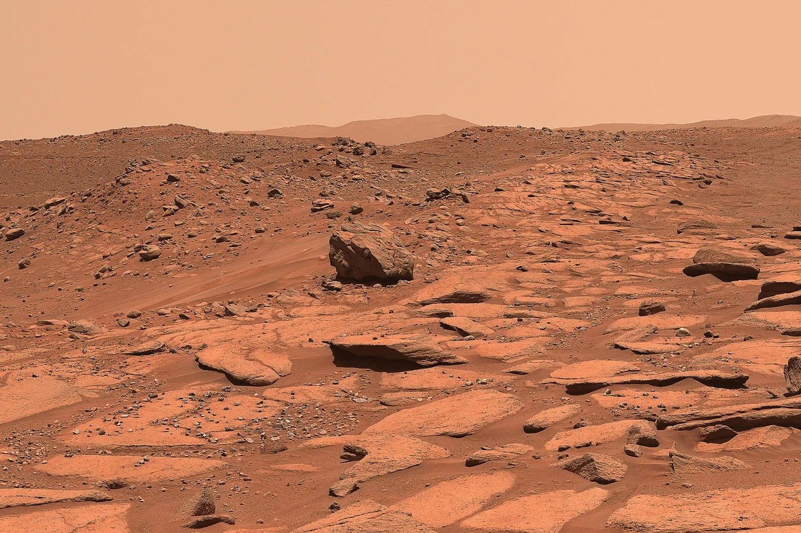
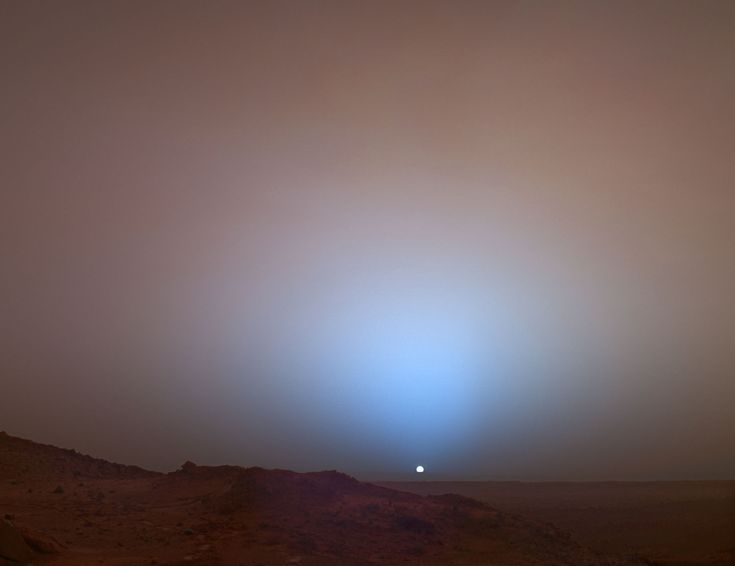
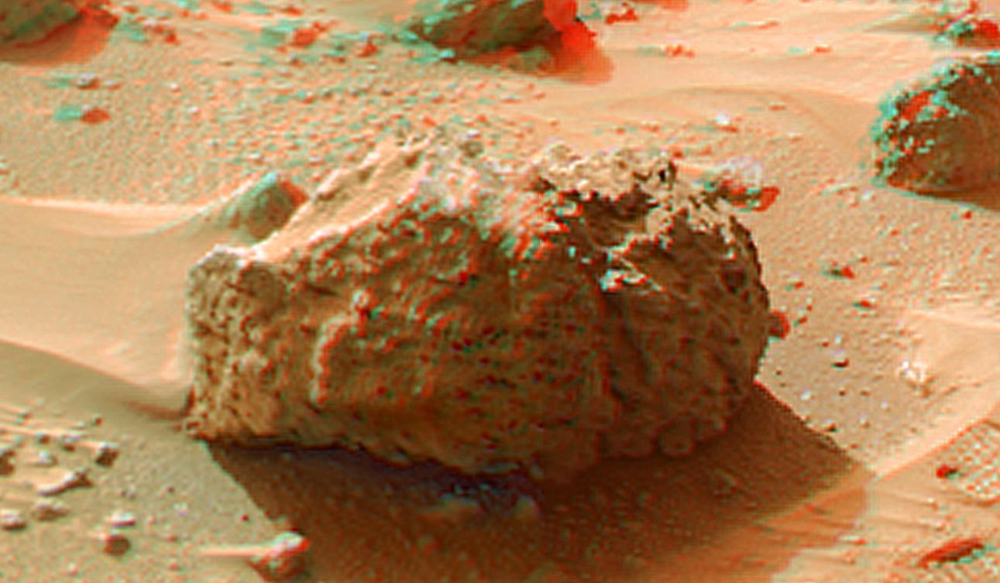
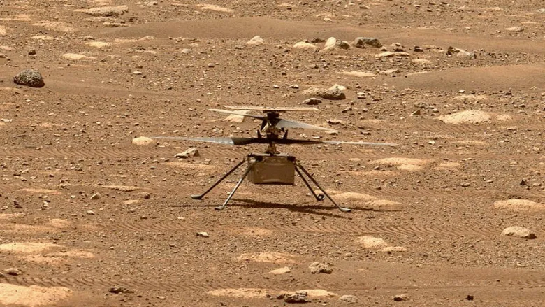
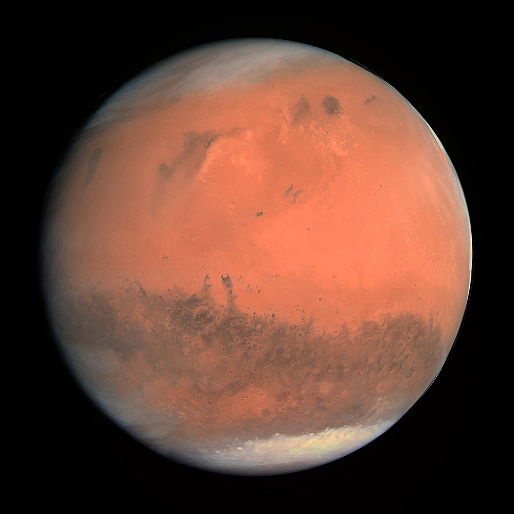
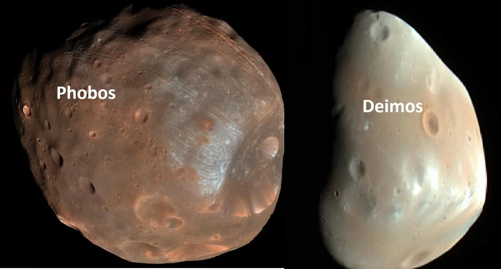
Mars, known as the red planet, is the fourth planet from the sun and in the solar system, it is orbited by two moons: Phobos and Deimos. It is the most explored planet in the entire solar system. Mars was named by the ancient Romans for their god of war because its reddish color was reminiscent of blood. Mars is about half the size of Earth, having a diameter of 4,212 miles. Mars completes one rotation every 24.6 hours meaning a day on Mars lasts 24.6 hours. One year on Mars lasts 687 days! as opposed to 365 days on Earth. The Red Planet is home to both the highest mountain and the deepest, longest valley in the solar system. Olympus Mons is roughly 17 miles high, about three times as tall as Mount Everest, while the Valles Marineris system of valleys, named after the Mariner 9 probe that discovered it in 1971, reaches as deep as 6 miles (10 km) and runs east-west for roughly 2,500 miles (4,000 km), about one-fifth of the distance around Mars and close to the width of Australia.is three times as tall as mount Everes (David C. Agle 2023). Mars has a very thin atmosphere, meaning it is unable to host liquid water for a long period of time as it would just freeze within a few seconds, Mars is practically just one big desert planet.
As mentioned earlier: Mars has two moons. These two moons were discovered in 1877 by American astronomer Asaph Hall over the course of a week. Hall had almost given up his search for a moon of Mars, but his wife, Angelina, urged him on. He discovered Deimos the next night, and Phobos six days after that. He named the moons after the sons of the Greek war god Ares — Phobos means "fear," while Deimos means "rout." It remains uncertain how these moons came about but it is theorised that these are random asteroids that were captured by Mars gravitational field.
One of Mars' moon, Phobos, is on a constant spiral towards Mars. This means that eventually, Phobos will crash into Mars! breaking into little pieces. The reason why it is on this spiral is due to Phobos rotating faster than Mars.
Deimos, The other moon of Mars, is spiralling away from Mars! as opposed to towards mars like Phobos. This means that eventually Deimos will spiral away from Mars and no longer orbit it. Both of Mars' moons seem to hate it lol.
A dust storm on Mars is so harsh that one dust storm is capable of covering the entire planet.
Mars is the only planet humanity has been able to send Robots onto to continue research meaning Mars is completely covered by robots. to know more: Look at the Missions to mars section.
Due to the way the atmosphere is scattered on Mars, Sunsets on the planet are the colour blue
Mars contains signs of ancient lakes and rivers. This supports the theory that Microbial life once existed on Mars and that at one point Mars was habitable. But due to changes in Atmosphere, this is no longer the case.
Mars Has Inspired Real Food Tech
NASA has developed “space food” for Mars missions, including ways to grow plants with limited water and soil. Some experiments use Martian soil (material found on mars) simulant mixed with Earth nutrients to see if crops like potatoes or lettuce can thrive. it doesnt.
We actually have pieces of Mars on Earth — meteorites blasted off Mars by asteroid impacts sometimes land here. Scientists study these rocks to learn about Mars without leaving Earth.
Mars Has Its Own Weather Report
NASA and other agencies regularly release weather updates from Mars, including temperature, wind speeds, and dust conditions
NASA's Viking 1
Viking 1 was the first of a pair of complex deep space probes that were designed to reach Mars and to collect evidence on the possibility on life on Mars.
It landed on a plain called the Chryse Planitia (in greek this means: "Golden Pillar")
Once the spacecraft landed, it began taking pictures of its surroundings in the form of high resolution images and panoromas
It also took temperature checks of mars, obtaining information that the conditions were -86 degrees celcius before dawn and -33 degree celcius in the afternoon
On July 28, 1976, the lander’s robot arm scooped up the first soil samples and deposited them into a special biological laboratory that included a gas chromatograph mass spectrometer.
The cumulative data from the four samples collected could have been construed as indicating the presence of life (weak positive), but the major test for organic compounds using the gas chromatograph experiment (capable of detecting organic compounds that comprised more than 10-100 parts per billion in the soil) gave negative results.
Data showed an abundance of sulfur, certainly different from any known material found on Earth or the Moon.
The spacecraft then continued its journey up until 1982, until we lost contact with it and was unable to initiate communication any further.
Sojourner
Sojourner, a spacecraft named after Sojourner Truth, an African-American abolitionist and women’s rights activist
The Sojourner was a Vehicle, and was the first ever space craft to drive on an external planet.
The rover was equipped with front and rear cameras, and hardware that was used to conduct several scientific experiments. (entire thing was broadcasted online for everyone to watch, was quite cool)
Sojourner was used to analyse martial rocks and soil. Sojourner's first analysis of a rock on Mars with the study of Barnacle Bill, a nearby rock named for its rough surface. They found it to be unexpectedly rich in silicates, similar to andesite found on Earth above subducted oceanic crust. This discovery suggested a more complex and diverse geological history for Mars than previously assumed.
Sojourner's Alpha Proton X-Ray Spectrometer (APXS) revealed that the rocks at the landing site had varying compositions, including silica, which can be a sign of thermal activity, suggesting a potentially more complex geological history for Mars.
What excited scientists the most, though, were the pictures beaming back to Earth showing rounded pebbles and "conglomerate" rocks that indicated something pushing different types of soil together in the past. NASA said this was evidence of a more water-rich planet, and suggested the plain Sojourner sampled was formed from floods that originated nearby the landing site.
Perseverance Rover & Ingenuity Helicopter
These two spacecrafts were sent to try and discover signs of ancient life!! First ever missions with this specific goal.
The Mars 2020 Perseverance Rover searches for signs of ancient microbial life, to advance NASA's quest to explore the past habitability of Mars.
Scientists went through 60 different locations on mars and came to the conclusion that Jezero Crater was the best site due to its nature being a large indicator of existance of rivers, seas on the planet, insinuating previous habituality
Igneous and sedimentary rocks were obtained indicating existance of volcanos
The rover was able to detect organic molecules, heavily supporting the theory that life once existed on Mars.
NASA created MOXIE, which stands for: Mars Oxygen ISRU Experiment. MOXIE produces molecular oxygen through an electrochemical process that separates one oxygen atom from each molecule of carbon dioxide. Designed specifically for carbon dioxide rich atmoshphere like Mars. It is impossible to breath on Mars due to the overbearing amount of CO2. MOXIE's mission was succesfull! Meaning that MOXIE was able to release Oxygen into the atmosphere of Mars, increasing the ability to habitabilise Mars.
The ingenuity helicopter was the first ever of its type of machine to make it on Mars. (its basically a drone called a helicopter for some reason)
The first aircraft to achieve powered, controlled flight on another planet, a feat that's been called a "Wright Brothers moment."
Helped scout terrain, identify hazards, and plan routes for Perseverance.
Astrology
In astrology, Mars is the planet of outward activity and animal passion including our sexual drive, aggression, and anger. Mars rules Aries and is exalted in Capricorn. This fiery planet is masculine in action, versus the softer more receptive and romantic Venus. When strong in the chart it can indicate a volatile temper, and also great courage. Its position indicates how your personality will assert itself, and what modes of activity will stimulate your physical energies, or your anger. By house, Mars represents where you will assert yourself, and where you will take action in the most positive sense.
Mars is classified as a malefic, or a trigger for challenges, and rules over both of the zodiac signs Scorpio and Aries, which are known for being reactive and argumentative when provoked. Scorpio connects with the strategic side of battle, while Aries aligns with the physical and explosive side of conflict. Therefore, Mars is in its detriment when it is placed in the opposite signs it rules: cooperative air sign Libra or indulgent earth sign Taurus. Mars also thrives in the structure of earth sign Capricorn, yet is uncomfortable in the emotional waters of Cancer.
Understanding Mars’ placement in your birth chart can provide valuable information about your motivations, desires, and approach to life’s challenges. It essentially shows you what (or who) turns you on in life. As you explore how Mars’ energy manifests differently through each of the 12 zodiac signs, keep in mind that Mars is also influenced by your unique birth chart.
Venus is the second planet from the Sun and is often called Earth's "sister planet" due to its similar size and rocky composition. Despite these similarities, Venus has an extremely harsh environment. Its surface temperature averages around 465°C (869°F), making it the hottest planet in the solar system, primarily due to a thick atmosphere composed mostly of carbon dioxide that traps heat through a runaway greenhouse effect. The planet’s atmosphere is also laced with clouds of sulfuric acid and has a surface pressure over 90 times that of Earth’s, equivalent to the pressure found nearly a kilometer underwater on Earth. Venus rotates very slowly and in the opposite direction of most planets, with one rotation taking longer than its orbit around the Sun. The planet has no moons or rings and lacks a magnetic field. Its surface features include vast volcanic plains, highland regions, and large mountains, suggesting significant geological activity. Although Venus’s surface is obscured by dense clouds, radar mapping missions have revealed much about its terrain. Past missions, such as those from the Soviet Venera series and NASA’s Magellan, have helped scientists study the planet, with more advanced missions planned for the future.
A day on Venus lasts longer than a year on Venus! This is because Venus orbits the sun faster than it completes a single rotation. a day on venus lasts 243 Earth days and a year on Venus lasts 225 days.
Venus is the brightest planet in our solar system and can actually be seen from Earth from the naked eye! However, locating the exact spot to look at is difficult. Due to this, Venus is called the morning star or evening star.
Venus has more volcanoes than any other planet in the solar system—over 1,600 major volcanoes.
Venus has no moons, theorised to be because it is too close to the sun so any potential moon just gets pulled by the sun (greedy shit)
Being on venus would feel like being 1 kilometer under water due to the insane pressure it has. you would also evaporate but yk if you could somehow land on it
Venus’s atmosphere has an unusually high ratio of deuterium (a heavy form of hydrogen) to normal hydrogen. This implies Venus once had much more water that was gradually lost to space. meaning that venus could potentially have been habitable
The International Astronomical Union has designated that all surface features on Venus are named after famous women or goddesses.
Venus’s atmosphere creates a mysterious “glow” in ultraviolet light that scientists still don’t fully understand—some think it’s caused by unknown chemical reactions or particles.
Venera 13
Venera 13 returned the first color images of the surface of Venus, revealing an orange-brown flat bedrock surface covered with loose regolith and small flat thin angular rocks.
Venera 13 also extended a drilling arm to the surface, picked up a bit of Venusian regolith, or soil, and analyzed it inside a sealed chamber. The results showed that the surface characteristics correspond to compacted ash material such as volcanic tuff [rock]
These missions revealed that the soils on Venus are primarily igneous in nature, with a chemical composition similar to basalt and granite found on Earth.
Further experiments by Venera 13 and 14 explored the rocks in more detail, hinting at possible sedimentary processes despite the absence of water on the planet. The analysis from these missions suggested that Venus may still be geologically active, as indicated by the presence of sulfur and other volcanic elements
It operated under temperatures of ~465°C (869°F) and pressures 90 times greater than Earth’s.
Its success was a technological triumph, proving that data collection under such harsh conditions was possible.
Pioneer Venus Project
The Pioneer Venus Project consisted of two separate missions: the Orbiter (launched in 1978) and the Multiprobe.
The Orbiter mapped nearly the entire surface of Venus using radar imaging, revealing mountains, volcanoes, and vast plains beneath the thick clouds.
The Multiprobe deployed four small probes into Venus’s atmosphere, collecting data on temperature, pressure, winds, and chemical composition as they descended.
One of the small probes continued transmitting data for over an hour after reaching the surface, far exceeding expectations.
The mission significantly advanced understanding of Venus’s dense atmosphere and cloud structure, including the discovery of lightning-like activity and complex atmospheric circulation.
The Orbiter also studied the ionosphere and solar wind interactions with Venus, contributing valuable data for comparative planetology.
Magellan
Magellan was launched by NASA in 1989 and became the first planetary mission to be launched by a space shuttle.
It used synthetic aperture radar (SAR) to map 98% of Venus's surface through its dense cloud cover.
The mission produced the most detailed maps of Venus ever created, revealing features like vast volcanic plains, large impact craters, and tectonic deformations.
Magellan's data showed that about 85% of Venus’s surface is covered with volcanic flows, providing strong evidence for extensive volcanic activity.
The mission helped identify coronae—large circular structures possibly formed by mantle plumes—unique to Venusian geology.
It concluded in 1994 with a controlled descent into Venus’s atmosphere, gathering data on atmospheric density before disintegration.
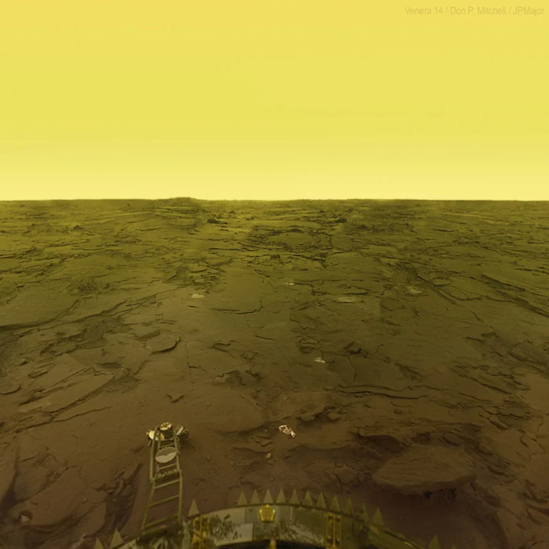
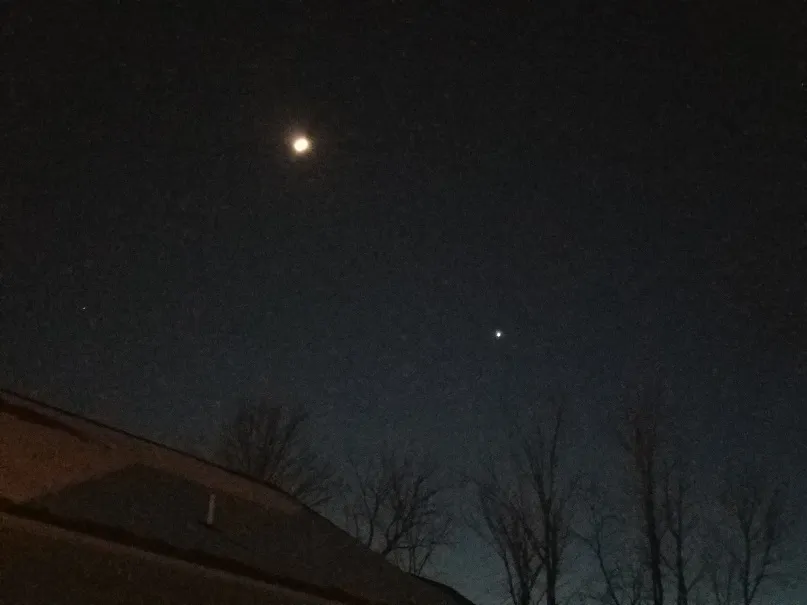
Venus, or the Greek Aphrodite, is the Goddess of love, beauty, and relationship. The planet probably gets her name because she is so very bright and beautiful! Venus is in-taking, rather than out-going (as represented by Mars), and rules the signs Libra and Taurus. Venus has its exaltation in Pisces, and is associated with aesthetics, beauty, refinement and romance. Its position in the chart indicates the area in which the give and take of love, affection, and sensual pleasure will be expressed. The position of Venus also shows a person's perception of relationship and affection. Or, the qualities and expressions of affection that someone may be most receptive to, or comfortable with. A person with Venus in Leo may have a much different perception of love and romance than a person with Venus in Cancer! Wherever she lies in your chart, or that chart of your lovers and friends, she is sure to play a big role in your romantic endeavors, quest for beauty, and potential for love! Venus is the only planet in the Solar System named after a female figure, since Ceres and Eris are dwarf planets.
Your Venus placement — exactly where Venus was located at the exact date, time and location of your birth — reveals the way you love, what you value, and the type of indulgence you crave.
Venus in Aries
Loves engaging in playful debates, especially with close companions.
Feels fulfilled through asserting their views and hearing opposing ones.
Thrives on competition and takes pride in being the best at what they do.
Venus in Taurus
Finds joy in creativity, artistry, and sensory pleasures.
Stubborn in artistic vision, often expressing it through crafts or cooking.
Feels happiest when making beautiful or indulgent things for loved ones.
Venus in Gemini
Delights in gossip, stories, and entertainment media.
Drawn to conversations about relationships and real-life dramas.
Enjoys watching the drama unfold—as long as it’s not personal.
Venus in Cancer
Finds joy in simple, comforting activities with loved ones.
Deeply values emotional warmth and familiarity.
Feels happiest in cozy, nurturing environments surrounded by love.
Venus in Leo
Loves giving and receiving thoughtful gifts as tokens of affection.
Seeks appreciation and recognition from loved ones.
Prepares celebrations and gifts far in advance, valuing the theatrical gesture.
Venus in Virgo
Finds peace through nature and practical hands-on projects.
Enjoys gardening, volunteering, and acts of service.
Feels fulfilled by contributing beauty and care to the world.
Venus in Libra
Feels happiest in loving, reciprocal relationships.
Seeks balance, harmony, and partnership in all aspects of life.
Love and companionship are core to their sense of joy.
Venus in Scorpio
Drawn to mysteries, secrets, and emotional depth.
Relies on intuition more than logic in love and life.
Feels joy from uncovering truths and solving hidden problems.
Venus in Sagittarius
Loves travel, adventure, and meeting people from all walks of life.
Finds joy in cultural exploration and learning new philosophies.
Happiness comes from freedom, movement, and new experiences.
Venus in Capricorn
Feels joy through reflection and preserving the past.
Enjoys creating tangible memories like scrapbooks and time capsules.
Finds beauty in structure, tradition, and long-term planning.
Venus in Aquarius
Finds happiness through activism and helping humanity.
Feels fulfilled when working for a cause or sparking societal progress.
Enjoys community involvement, protests, and spreading awareness.
Venus in Pisces
Connects deeply with emotional and artistic expression.
Feels joy in music, dance, poetry, and anything sentimental.
Uses creativity to share love, compassion, and soulful insight.
 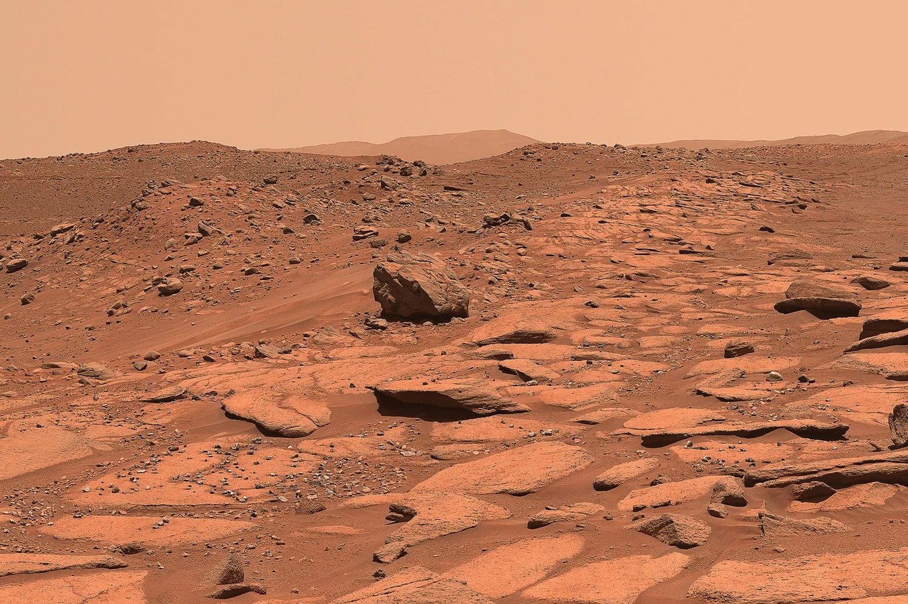
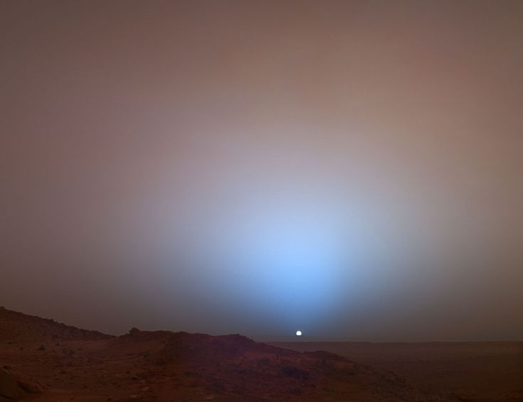
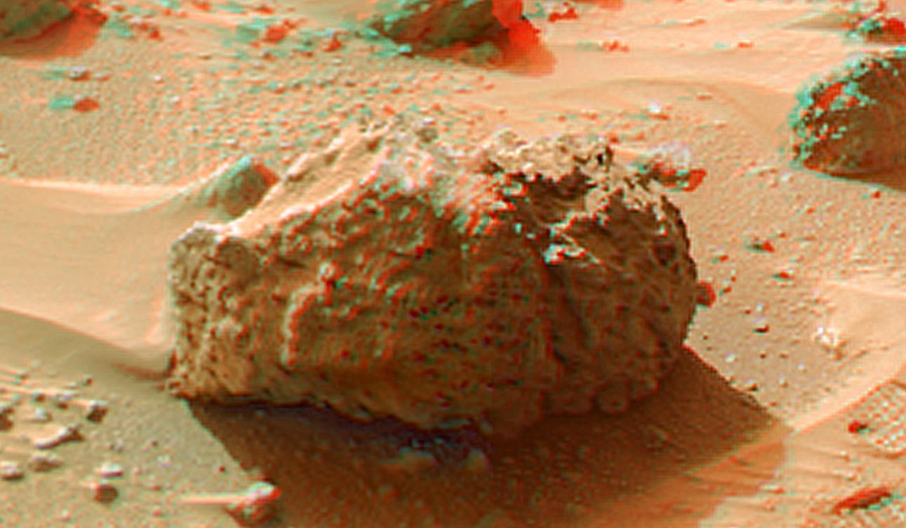
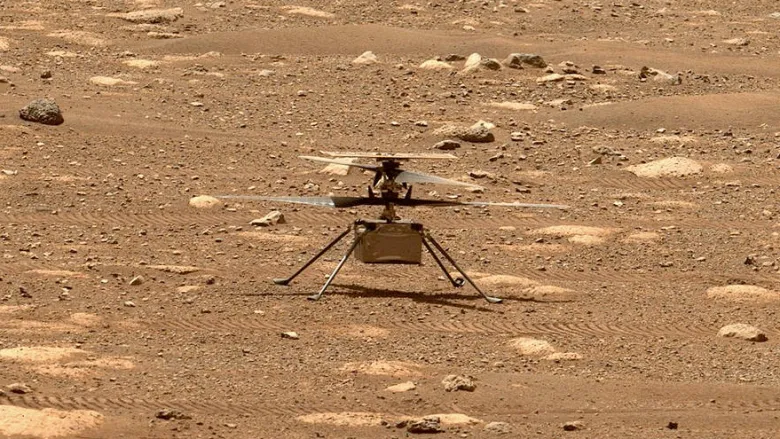
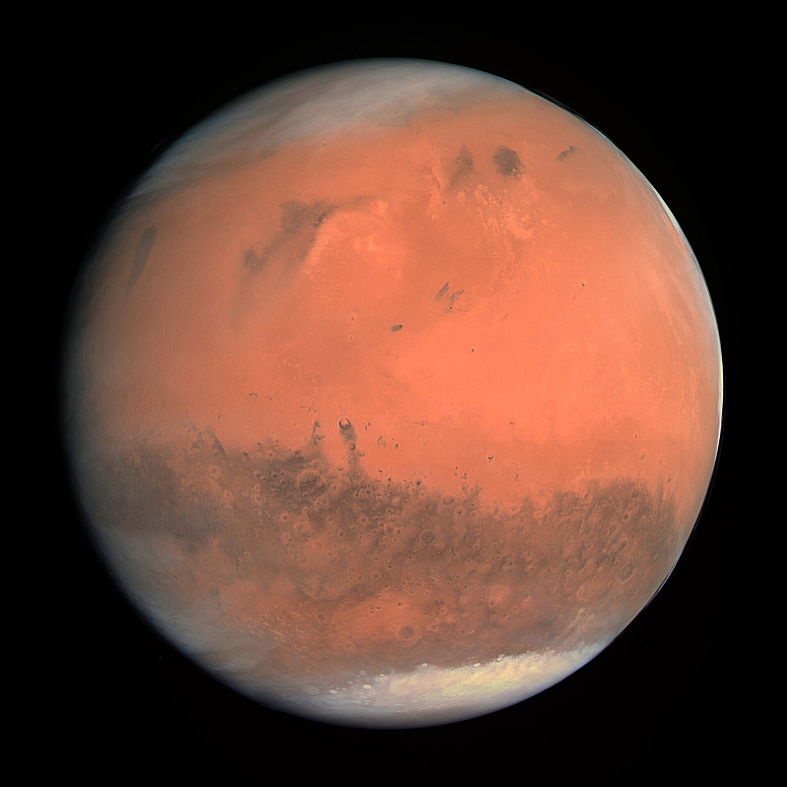
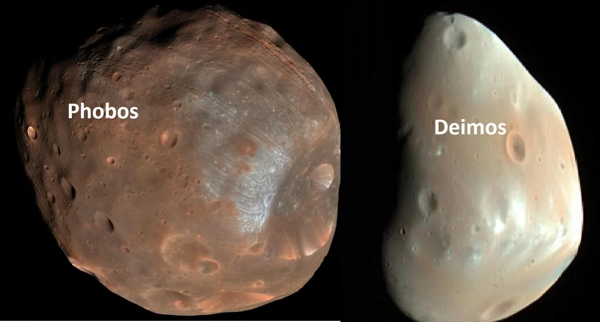
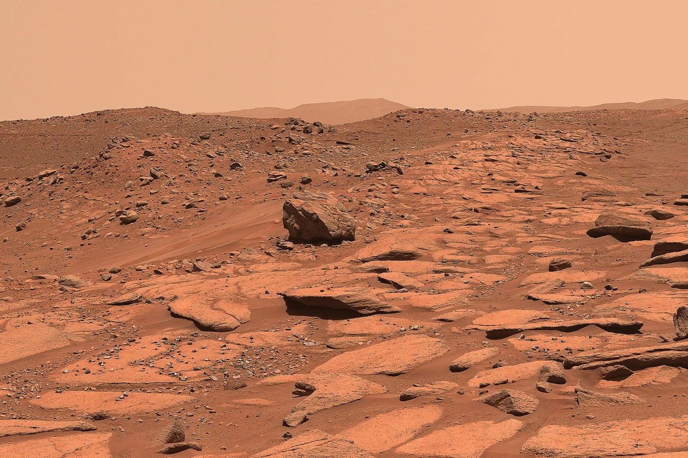
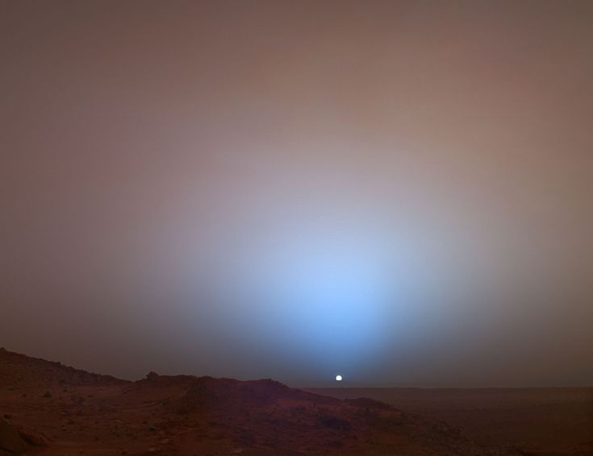
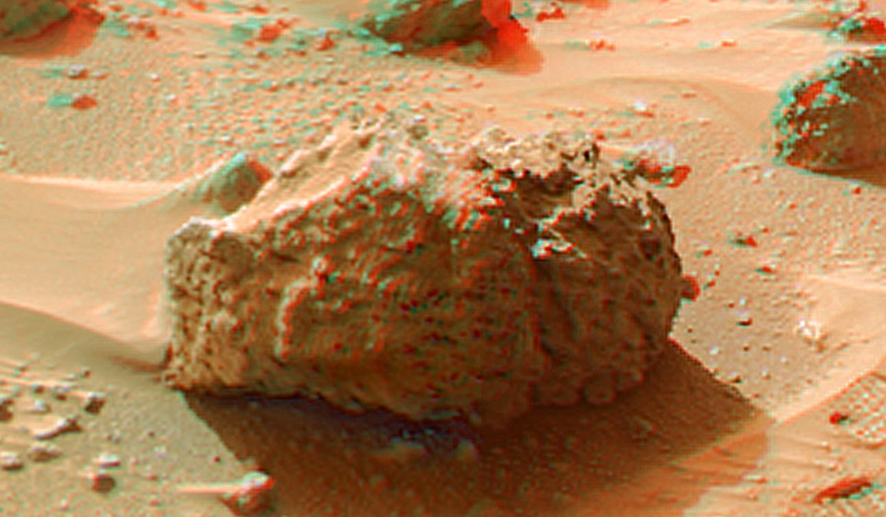
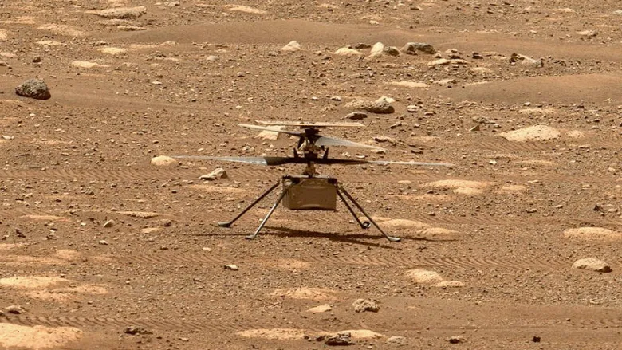
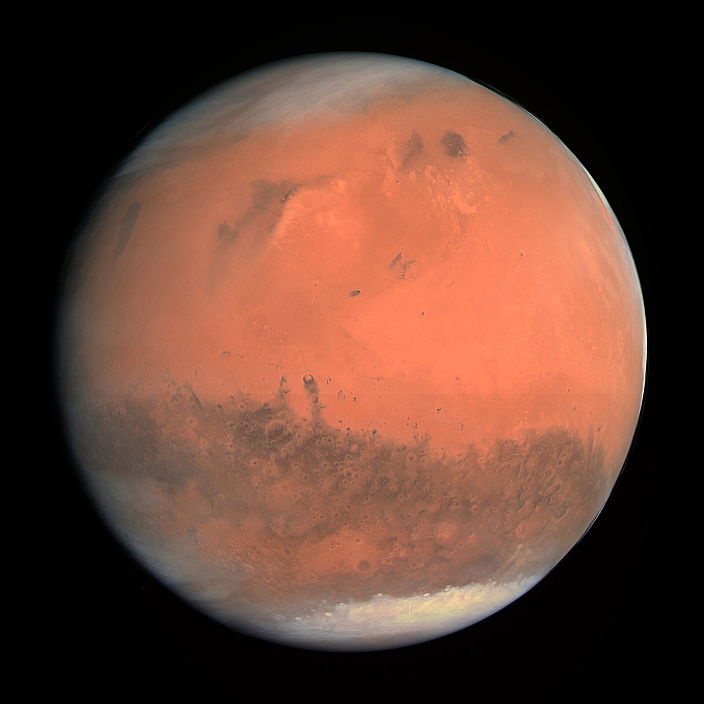
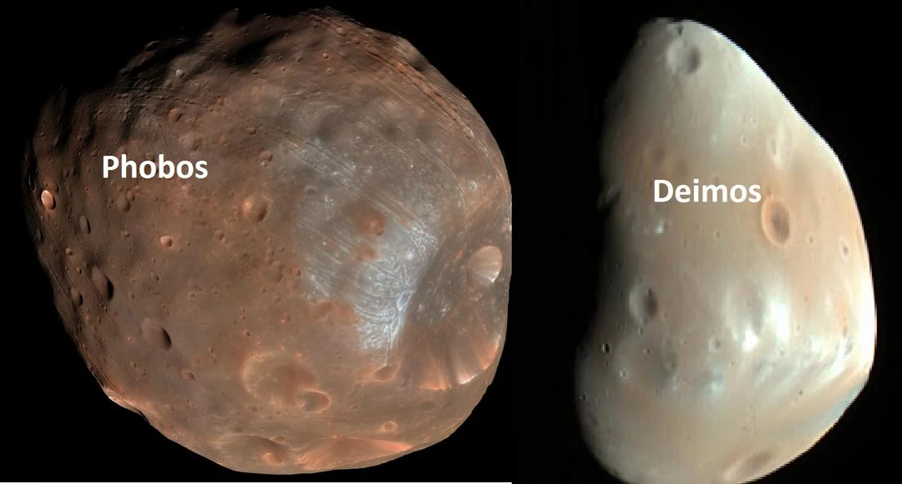